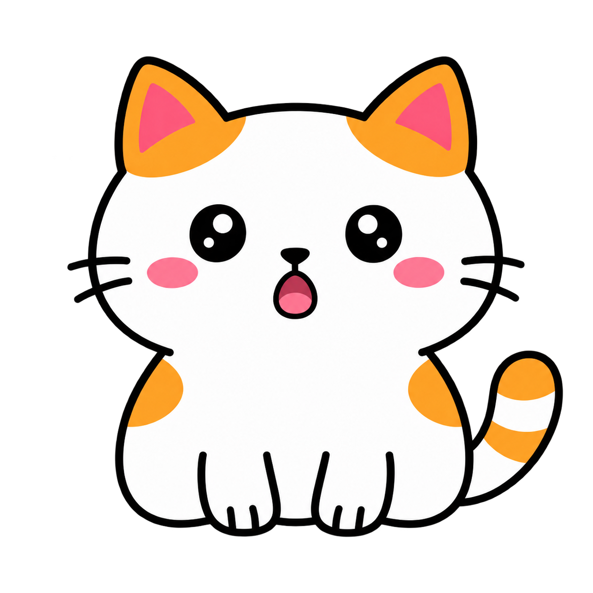
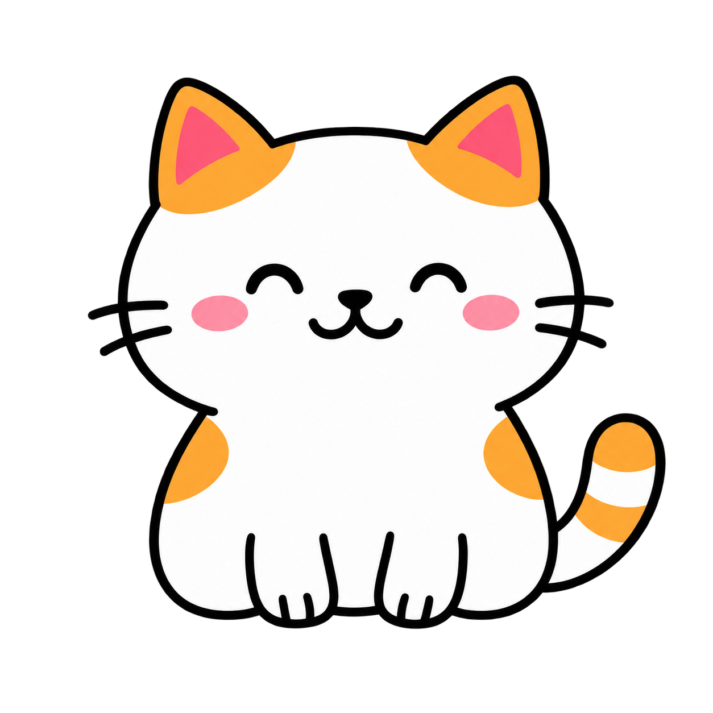
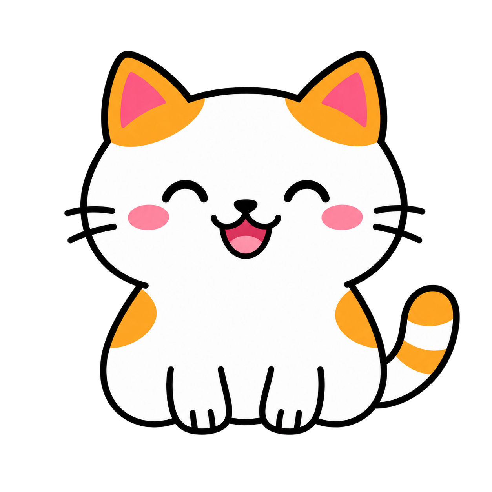
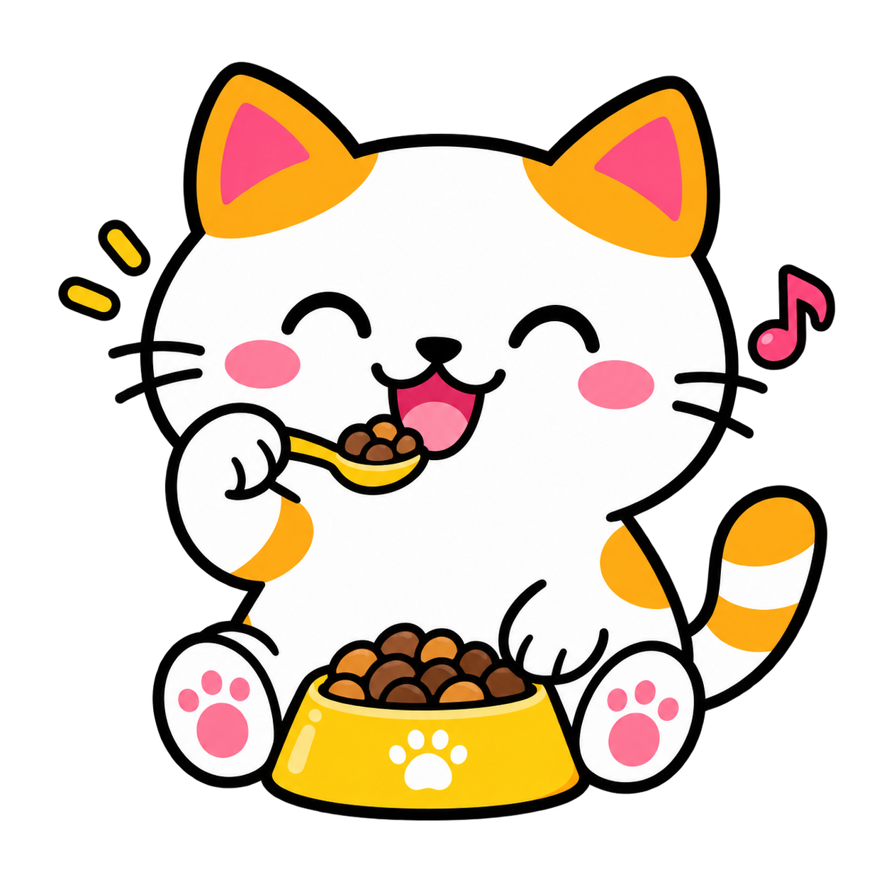
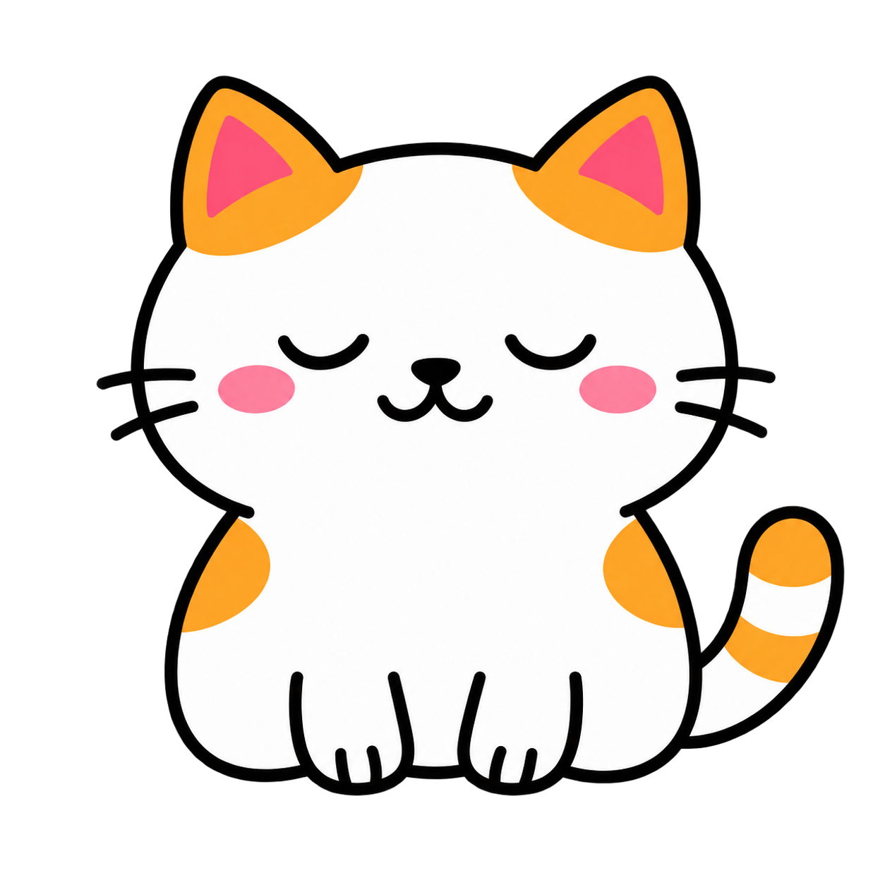
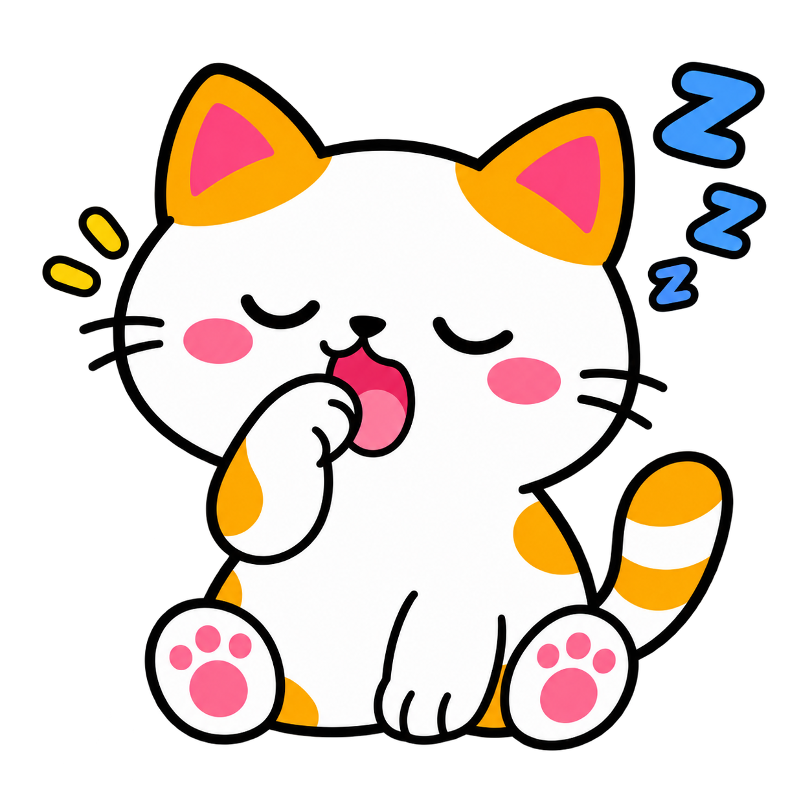

메신저와 공문에서
일정을 자동 수집하는
기능의 부재
Teacher’s workflow tool
교사를 위한 일정 수집 도구CatMoa
흩어진 업무를 던지면,
고양이가 일정과 할 일을 모읍니다.
macOS · Windows · Linux무료 · 오픈소스 MIT교사 해커톤 프로젝트

CatMoa01 / 17
The problem · 14:20
수업은 끝났지만,
선생님의 업무는
끝나지 않았습니다.
자리에 앉는 순간, 서로 다른 곳에서
마감과 요청이 쏟아집니다.
💬
15:00가정통신문 취합 · 메신저
📄
내일 16:30업무 기안 요청 · 공문
🗣️
내일 2:30전교직원 회의 · 구두 전달
🔔
방금새로운 전달사항이 도착했습니다
하나를 처리하면, 또 하나가 도착합니다.02 / 17
The real problem
문제는 일정의 양보다,
들어오는 길이 흩어져 있다는 것
같은 오후, 네 번의 전달. 기록하고 옮겨 적는 일은 모두 선생님의 몫입니다.
쿨메신저
학년 협의 일정
에듀파인 공문
제출 마감
단체 채팅방
준비물 안내
회의 · 구두
학생 상담 요청
기억하고 → 옮겨 적고 → 다시 확인하고03 / 17
A tiny idea
여기서 발상을 바꿨습니다.
그래서 컴퓨터에
고양이를 한 마리
키웠습니다.
흩어진 자료를 고양이에게 던지면
일정과 할 일을 대신 찾아 정리합니다.
자료를 던진다→고양이가 모은다→캘린더에 들어간다

CatMoa04 / 17
사전 인터뷰 현장 교사에게 먼저 물었습니다
85%
일정이나 업무를
놓친 경험이 있다
3.4
현재 관리 방식 만족도
5점 만점
4+
메신저·공문·단톡방·구두
일정 전달 경로
전달 경로가 흩어져 있다
정형화된 메신저와 공문 외에도 단톡방, 회의, 구두 전달이 많습니다.
기록은 사람 손에 달려 있다
수첩과 앱을 병행하지만 결국 일일이 옮겨 적어야 합니다.
놓치면 곧바로 급해진다
늦게 확인한 마감과 수합 업무는 바로 긴급 업무가 됩니다.
도구의 부재보다, 경로의 분산과 수동 기록이 문제였다.05 / 17
Problem reframing
기능이 아니라, 문제를 다시 정의했습니다.
→
다양한 경로로 전달된 일정을
편리하게 수집하고 정리하기
복잡한 기능보다 단순하고 간결한 수집 경험06 / 17
How CatMoa works
08
고양이는 어떻게
업무를 모을까요?
CatMoa를 만든 여덟 가지 선택
From friction to flow07 / 17
Watch CatMoa in action
CatMoa · Demo08 / 18
Feature 01
01
설치와 Google 연동이
아주 쉬움
내려받기에서 실행, 연동까지 단순하게
✓
내려받아 더블클릭
Python 설치나 서버 구축 없이 실행 파일 하나로 끝
✓
JSON 키 없는 Google 로그인
브라우저 로그인 한 번, 토큰은 OS 키체인에 저장
✓
첫 설정 약 1분
LLM 선택 → API 키 → 연결 테스트 → Google 로그인
✓
배울 것이 없는 사용법
창을 찾지 말고 화면 위 고양이에 자료만 던지기

macOS · Windows · Linux08 / 17
Feature 02
02
자료의 형태를 가리지 않는
네 가지 입력 방식
교사가 업무를 찾아 정리하는 대신, 흩어진 업무가 한곳으로 모입니다.
💬
쿨메신저
새 쪽지
자동으로 가져오기
📋
단체 채팅방
메모
복사 · 붙여넣기
📄
공문
안내문
드래그 · 캡처
🎙️
회의
구두 전달
휴대폰 음성 입력
수집의 입구는 넓게, 사용법은 단순하게09 / 17
Feature 03 · Privacy by design
03
개인정보는 외부로 나가기 전,
로컬에서 차단
규칙 기반 + 경량 토큰 분류 모델의 2단 비식별화
📝
원문
이름, 학교명, 전화번호 등이 포함된 업무 자료
›
🛡️
로컬 탐지
규칙 기반 탐지와 문맥 판단 모델을 내 PC에서 실행
›
▧
비식별 텍스트
민감정보를 마스킹한 안전한 텍스트만 생성
›
✨
외부 AI 분석
개인정보가 제거된 내용만 선택한 AI로 전달
개인정보 보호를 옵션이 아닌 기본값으로10 / 17
Feature 04 · Staged AI harness
04
한 번에 다 시키지 않고,
좁은 판단으로 쪼갭니다.
단계별 하네스로 모델 혼동을 줄이고 출력의 안정성을 높입니다.
추출
입력에서 기록해야 할 일정이나 업무 후보를 찾습니다.
판단 · 분류
나의 업무인지, 일정인지 할 일인지, 상대 날짜가 언제인지 판단합니다.
검증
형식을 규칙 기반 검증기로 확인하고, 등록 전에 사람이 최종 검토합니다.
모델 혼동 감소안정적인 출력작은 로컬 모델에도 유리
정확도는 거대한 프롬프트가 아니라 구조에서11 / 17
Feature 05
05
AI는 정리하고,
관리는 검증된 도구에
새 서비스를 만들지 않고 Google Calendar와 Tasks를 활용합니다.
31
일정 → Google Calendar
알림, 반복 일정, 모바일·PC 동기화를 그대로 사용
✓
해야 할 일 → Google Tasks
마감, 완료 처리, 인박스 수집을 익숙한 방식 그대로
기존 Google 동기화
안정화된 기능 활용
별도 일정 DB 없음
프로그램을 꺼도 확인
데이터는 사용자의 Google 계정에만 저장12 / 17
Feature 06 · Ambient interface
06
화면 한구석의 고양이,
개입은 최소로
프로그램을 여는 순간 자체를 없앤 인터페이스
✓
항상 곁에 있는 작은 위젯
창을 열고 닫는 과정 없이 던지면 바로 처리
✓
표정으로 알리는 상태
대기 · 문서 읽기 · 분석 · 완료 · 오류를 한눈에
✓
방해하지 않는 존재감
크기 조절, 트레이 숨기기, 작업표시줄 미점유

대기 중뭐든 던져주세요서류 찾는 중문서 읽기

냠냠AI 분석 중
완료!등록 완료연달아 넣어도 통합 큐에서 순서대로13 / 17
Feature 07 · School context
07
일반 일정이 아니라,
교사의 언어와 맥락을 이해
학교 현장에서 실제로 쓰는 표현을 그대로 알아듣도록 설계했습니다.
👤
내 역할 기반 필터
담임 학년과 담당 교과를 바탕으로 나와 무관한 쪽지는 알림만
🕒
학교 시간 해석
“3교시”, “점심시간”, “퇴근 전”을 실제 시각으로 변환
📅
상대 날짜 해석
“다음 주 목요일”과 주간계획서의 여러 항목을 한 번에 처리
↔️
일정 / 할 일 분리
날짜가 없어도 할 일로 추출하고 양쪽 등록 가능
✍️
등록 전 검토
대상, 알람, 내용을 확인하고 수정한 뒤 등록
◎
중복 검사
기존 항목과 비교해 건너뛰기, 갱신, 신규 등록 선택
학교에서 쓰는 표현을, 학교에서 쓰는 시간으로14 / 17
Feature 08 · Open architecture
08
학교 환경에 맞춰
고를 수 있는 구조
모델도, 운영체제도, 코드도 열려 있습니다.
✨
LLM 선택
- Claude · ChatGPT · Gemini · Upstage
- 외부 전송이 부담이면 Ollama
- 필요와 예산에 맞춰 교체
🖥️
설치 환경
- macOS · Windows · Linux
- Python 없이 실행 파일로
- 자동 실행 · 업데이트 옵션
⌘
개방성
- 오픈소스 · MIT 라이선스
- 별도 서버 없이 내 PC에서
- 키와 토큰은 OS 키체인에
도구가 학교를 고르는 대신, 학교가 도구를 고르도록15 / 17
Result · 직접 사용해 본 결과
업무 일정 등록 시간
1/3
수준으로
기존 방식100
CatMoa33
같은 업무 일정을 등록하는 데 걸린 시간 기준
남는 시간은 다시, 학생에게.
실제 사용 경험에 따른 비교16 / 17
In one sentence
한 문장으로 정리하면
흩어진 업무 자료를 손쉽게 던지면,개인정보는 로컬에서 걸러내고,단계별 AI가 일정과 할 일을 판단해Calendar와 Tasks로 보내주는 도구.

CatMoa · 감사합니다17 / 17